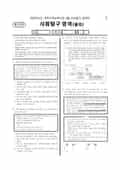

문제지


시험지를 먼저 풀어 보세요. 등급컷·표준점수·난이도는 흐리게 가려 뒀어요.
정답 변경 없음
이의신청 2문항 · 평가원 상세 답변 2문항
평가원 답변
본 문항의 목적은 다산의 실학적 인간관의 특성인 기호와 자유 의지를 사례를 통해 판단할 수 있는 능력을 평가하는 것입니다.(이하 설명) 다산은 실학자이며, 실학도 유학의 한 흐름입니다. 다산의 학은 洙泗學이라고 명명될 정도로 공자의 실천 유학을 강조한 입장입니다. 다산은 성리학의 공리공론성에 대해서는 철저하게 비판하지만, 맹자 같은 원시 유가나 퇴계 율곡같은 성리학자들이 자주 언급했던 4번 선택지의 내용, “사욕을 경계하고, 악에 빠지려는 마음을 통제하는 수양”에 대해서는 매우 강조하고 있습니다. 이는 다산이 주장한 자유의지 개념을 살펴보면 분명히 파악될 수가 있습니다. 먼저, “사욕을 경계하고, 악에 빠지려는 마음을 통제하는 수양”을 강조하고 있는 글을 다산의 <孟子要義>에서 발췌 번역해서 제시하겠습니다. ∎원문1) : “자신을 (不善에)빠뜨리는 것은 형기의 사욕 때문이거나, 습속의 오염 때문이거나, 外物의 유혹 때문이다.” ∎원문2) : “공자의 이른바 ‘잡으면 보존되고 놓으면 잃어버린다’는 것은⋯⋯사욕을 따르지 않고 한결같이 道心을 듣고자 하는 것이다.” ∎원문3) : “만일 생각하지 않으면 사욕에 빠지게 되어 따르고 어기는 것에서 바름을 잃게 되니, 마음이 능히 생각할 수 있는 것이 어찌 다행한 일이 아니겠는가.” ∎원문4) : “存心은 매양 일을 행할 적에 사욕을 버리고 천명을 따르며 악을 버리고 선을 좇아서 이 微微하여 장차 없어지려고 하는 한점 道心을 보존하는 것이다.” 여기서 볼 수 있듯이 다산은 “사욕을 경계하고, 악에 빠지려는 마음을 통제하는 수양”을 매우 강조하고 있습니다. 다산의 입장은 제시문 (나)와 같이 인간에게는 자유의지가 있다는 것입니다. 그런데 자유의지가 있다는 것은 곧 수양이 필요하다는 의미를 함축하고 있습니다. 인간에게 자유의지가 주어져 있지만 선을 하고자 해서 그것을 실천할 수 있으려면, 마땅히 “사욕을 경계하고, 악에 빠지려는 마음을 통제하는 수양을 해야 한다”는 것이 다산의 자유의지론의 본의입니다. 마음을 수양하는 아무런 노력도 없이 선을 실천하게 되는 것이 아니라는 것입니다. 즉 자유의지와 수양은 사실상 맞물려 있는 것입니다. 따라서 다산도 역시 “사욕을 경계하고, 악에 빠지려는 마음을 통제하는 수양을 해야 한다”는 것을 매우 강조하고 있습니다. 다산은 심지어 성리학자들의 주장대로 ‘천으로부터 부여받은 바에 따라 인간의 본성이 선하다’고 한다면 수양을 해야 할 필요가 있겠느냐고 반문합니다. 인간의 본성이 선하다고 하면 선한 본성이 어떤 경우에도 그대로 발현되어야 하는 것 아니냐는 것입니다. 이에 다산은 인간이 선도 행할 수 있고, 악도 행할 수 있는 자유의지를 가진 존재이므로, “사욕을 경계하고, 악에 빠지려는 마음을 통제하는 수양이 매우 필요하다“는 입장을 취하는 것입니다. 이상에서 알 수 있는 바와 같이, 선택지 4번은 다산의 입장이기 때문에 답이 될 수 없습니다.사회탐구 영역 : 과목 : 윤리
평가원 답변
본 문항의 목적은 전통윤리에 내재해 있는 경제관의 인식을 통하여 현대 자본주의 사회가 당면하고 있는 문제점 해결의 시사점을 찾을 수 있는 능력을 평가하는 것입니다.(이하 설명)
(나)의 퇴계나 율곡같은 유학자들을 포함하여 유학사상 일반에서 중시하는 대동사회(大同社會)는 정치, 경제, 사회, 문화 등 제반 측면에서 융평(隆平)을 이룬 이상적 평등사회일 것입니다. 그 점을 부인하는 것은 아니며, 유교에서 도덕적인 삶과 경제적인 삶의 조화를 강조하고 늘 균등한 사회를 지향한다는 것도 우리 모두가 주지하는 바입니다.
그러나 이 문제에서는 유가(儒家)에서 지향하는 이상사회의 궁극적인 상황을 묻는 것이라기 보다는 현대사회에서 수단과 방법을 가리지 않고 돈만 벌면 된다는 사람들의 인식이나 태도를 반성해 볼 수 있는 전통적 가르침의 내용, 즉 ‘견리사의(見利思義)’나 ‘의주리종(義主利從)’의 내용을 학생들이 올바르게 이해하고 있는가를 파악하고자 하는 것입니다.
주지하다시피 ‘견리사의’는 ‘이로움을 보면 의를 생각하라’, 즉 이익 또는 이윤을 얻으면 그것이 정당한 것인가를 생각하라는 내용입니다. 또 ‘의주리종’은 의를 우선으로 하고 이익은 부차적인 것으로 여기라는 가르침으로써, 이것 역시 이익을 우선하기 보다는 올바름의 문제가 더 중요하다는 내용입니다. 둘 다 공통적으로 ‘이(利)’ 보다는 ‘의(義)’를 우선적으로 여기고 중시하여야 한다는 가르침을 담고 있습니다. 경제적 이익을 추구함에 있어서 유학자들이 우선적으로 도덕적 정당성, 즉 올바른 수단과 방법에 의한 수익인지를 살펴야 한다고 강조하고 있는 것입니다. <전통윤리> 교과서에서도 이 두 가지는 전통사회에서 경제적 문제를 대할 때, 무엇보다 이익을 취함에 있어서 정의로운 방법으로 취득하였는가를 살피라는 가르침을 그 핵심내용으로 하고 있다는 것을 잘 기술하고 있습니다. 따라서 균등이나 평등사회는 이것과 직접적으로 관련된 내용이라고 보기 어렵습니다.
이 문항은 ‘견리사의’나 ‘의주리종’하여 궁극적으로 어떤 세상을 열어갈 것인가를 묻는 문제가 아니라, 그 두 한자어가 지닌 내용이 (다)와 같은 오늘날의 상황에 비추어 볼 때 무엇을 강조하고 있는가를 묻고 있습니다. 만약 (가)와 (다)로써 묻고자 하는 내용을 제한하지 않고, 다만 (나)의 성리학자들이 궁극적으로 추구하고자 하는 세상을 단편적으로 물었다면 답지 ⑤가 답이 될 수도 있을지 모르지만, 이 문항의 경우 ‘견리사의’와 ‘의주리종’을 (다)의 구체적인 현상과 관련시켜서 그런 문제 상황하에서 강조하고자 하는 내용이 무엇인가를 묻고자 한 것입니다. 그리고 답지에서 ‘정당한 절차’라는 말은 바로 ‘의(義)’, 즉 현대적 의미로 보면 ‘올바른 절차나 방법에 의한’ 이라는 의미를 담고 있습니다. 따라서 ‘견리사의’나 ‘의주리종’이 지도층의 솔선수범을 기대한다는 것은 어느 정도 통하는 바가 있겠지만, 그것을 통하여 경제적 ‘평등’ 사회를 실현하는 내용으로까지 해석하는 것은 그 말들이 지닌 직접적인 의미를 지나치게 넓게 해석하는 것입니다.
원문 표에서 읽어낸 문항만 적었어요. 전체 목록은 아래 답변자료 원문에 있어요.
발행 기관: 한국교육과정평가원(KICE). 파일 위치: 이 사이트가 보관한 사본. 저작권은 발행 기관에 있습니다. 원본과 다르거나 게시 중단이 필요하면 연락처로 알려 주세요. 등급컷 출처 구분은 데이터 원칙에서 설명합니다.